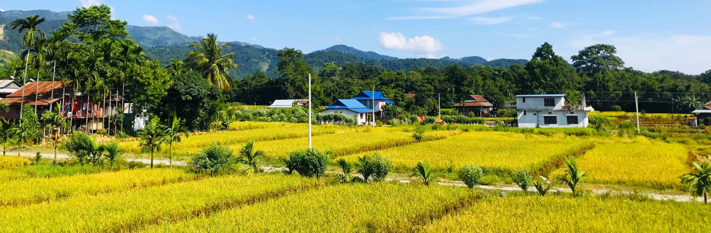
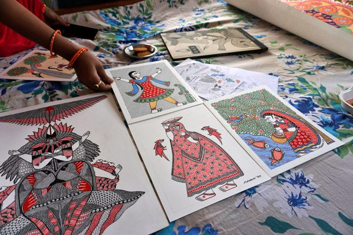

About the Mithila Region
Mithila is one of South Asia's oldest cultural regions, with a recorded history stretching back to the Vedic period. Its borders have shifted through the centuries, but today the term primarily refers to the Madhesh Province of Nepal - the living heartland of Mithila culture - as well as parts of the northern districts of Bihar state in India.
Historical Background
The name Mithila comes from King Mithi, a legendary ruler said to have founded the region. Ancient Mithila was a powerful independent kingdom known as Videha, ruled by the Janaka dynasty. King Janaka - father of Goddess Sita - was one of its most celebrated philosopher-kings. The kingdom was known across ancient India as a centre of philosophy, learning, and debate.
The Ramayana, one of Hinduism's two great epics, places Mithila at the heart of the story through the birth and marriage of Sita. Janakpur in Nepal is widely recognised as the birthplace of Goddess Sita and the site of her marriage to Lord Ram - making Nepal's Mithila the sacred epicentre of this ancient story for hundreds of millions of Hindus around the world.

Mithila in Nepal - The Living Heartland
Nepal's Madhesh Province (formerly Province No. 2) is the true living heart of Mithila culture. Stretching across the fertile eastern Terai plains, this region is home to millions of Maithil people who have preserved their language, art, festivals, and customs with extraordinary continuity for thousands of years. Mithila painting is still practised on the walls of homes, not just on paper for sale.
Janakpur (Janakpurdham) - The Sacred Capital
Janakpur is the largest city of Madhesh Province and the undisputed cultural and spiritual heart of Mithila in Nepal. It is home to the magnificent Janaki Mandir - a white marble temple dedicated to Goddess Sita (Janaki), built in 1911 in a dazzling Mughal-Rajput architectural style. The temple draws hundreds of thousands of pilgrims each year, especially during Vivah Panchami (the anniversary of Ram and Sita's wedding) and Chhath Puja. The city's 72 sacred ponds (kunds), including Ganga Sagar and Dhanush Sagar, are integral to religious life and festival celebrations.
Rajbiraj - Capital of Saptari District
Rajbiraj is the administrative capital of Saptari District, one of the most culturally Maithil districts of Nepal. The city is an important commercial and cultural hub in the eastern Terai. Chhath Puja is celebrated with great fervour here along the banks of local rivers and ponds. The surrounding villages are known for traditional Mithila wall paintings still found on many homes.
Lahan - Cultural Hub of Siraha District
Lahan, the headquarters of Siraha District, is a growing city where Maithili culture remains deeply embedded in everyday life. The district has a rich tradition of Mithila art and is home to many artisan families. Its markets are lively centres of Maithil commerce and festival activity.
Birgunj - Gateway City of Parsa District
Birgunj, one of Nepal's most important commercial cities, sits on the border with India in Parsa District. While known primarily as a trade hub, Birgunj has a significant Maithil population and celebrates Chhath Puja as one of the city's most important festivals. It serves as a key entry point for visitors arriving from India into the Mithila region.
Malangwa - Heart of Sarlahi District
Malangwa is the headquarters of Sarlahi District in the western part of Madhesh Province. The district forms part of the broader Mithila cultural zone, with Maithili spoken widely and festivals like Chhath Puja and Sama-Chakeva observed throughout the district's towns and villages.
Jaleshwar - Mahottari's Ancient Town
Jaleshwar, the headquarters of Mahottari District, is one of the oldest settlements in the Terai and holds deep religious significance. It is home to the ancient Jaleshwar Mahadev temple, dedicated to Lord Shiva, which is a major pilgrimage site. The town and surrounding villages are centres of traditional Mithila culture, art, and Maithili-language education.
All Mithila Districts of Nepal - Overview
The following districts of Madhesh Province form the core of Mithila's Nepal territory. Each has its own distinct character while sharing the same Maithili language, art, and cultural heritage.
| Mithila in Nepal - Districts & Key Cities | |||
|---|---|---|---|
| District | Headquarters / Key City | Cultural Highlights | Notable For |
| Dhanusha | Janakpur (Janakpurdham) | Janaki Mandir, Ram Mandir, 72 sacred ponds | Spiritual capital of Mithila; Vivah Panchami celebrations |
| Saptari | Rajbiraj | Traditional wall paintings, Chhath Puja at rivers | Easternmost Mithila district; strong Maithili literary tradition |
| Siraha | Lahan | Mithila art households, local festivals | Known for artisan families; active Maithili cultural groups |
| Mahottari | Jaleshwar | Jaleshwar Mahadev temple, Maithili schools | Ancient religious town; Maithili education and literature |
| Sarlahi | Malangwa | Sama-Chakeva, Chhath Puja | Western fringe of Mithila heartland; vibrant folk traditions |
| Parsa | Birgunj | Chhath Puja, cross-border Maithil community | Major commercial hub; gateway from India into Mithila Nepal |
| Rautahat | Gaur | Traditional Mithila customs, rural art traditions | Agriculture-based Maithil heartland; Gaur is a historic town |
| Bara | Kalaiya | Festival culture; Maithili-speaking communities | Transitional district between Mithila and inner Terai |

Mithila in India
On the Indian side, Mithila covers parts of northern Bihar state, particularly the Madhubani and Darbhanga districts. While the art form has been internationally marketed as "Madhubani art" after the Indian district, the Mithila cultural tradition is equally shared and deeply rooted in Nepal's Madhesh Province.
Darbhanga & Madhubani - Key Indian Centres
Darbhanga was historically the intellectual seat of the Darbhanga Raj, a major patron of Maithili literature and culture. Madhubani district lent its name to the art form and received a GI tag from India in 2007. Both cities have important institutions supporting Maithili language and literature.
| Mithila in India - Key Facts | |
|---|---|
| Category | Detail |
| State | Bihar, India |
| Major Districts | Darbhanga, Madhubani, Sitamarhi |
| Famous For | Madhubani painting (GI tagged, 2007), Maithili literature |
| Key Institution | Kameshwar Singh Darbhanga Sanskrit University |
| Nearby Border | Jaynagar - connects to Janakpur, Nepal |
Nepal vs India - Comparison
Though separated by an international border, both parts of the Mithila region share the same language, art forms, festivals, and cultural identity. Nepal's side is the primary living centre of Mithila culture today, while India's Madhubani district gave the art form its internationally known name.
| Aspect | Mithila (Nepal) - Primary Heartland | Mithila (India) |
|---|---|---|
| Administrative Unit | Madhesh Province (8 districts) | Northern Bihar state |
| Cultural Capital | Janakpur - Sita's sacred birthplace, Janaki Mandir | Darbhanga - Darbhanga Raj & Sanskrit university |
| Other Key Cities | Rajbiraj, Lahan, Jaleshwar, Birgunj, Malangwa, Gaur | Madhubani, Sitamarhi |
| Language | Maithili (shared across both sides) | |
| Art Form | Madhubani / Mithila Painting (shared tradition) | |
| Major Festival | Chhath Puja, Vivah Panchami (celebrated on both sides) | |
| Art Recognition | Internationally recognised through Janakpur Women's Dev. Centre | GI Tag granted by India (2007) |
| Living Art Tradition | Actively practised on home walls across Madhesh villages | Primarily on paper/canvas for commercial sale |
The Maithili Language
Maithili is one of the oldest literary languages of India. The 15th-century poet Vidyapati - often called the "Poet Laureate of Mithila" - wrote celebrated devotional and romantic poems in Maithili that are still sung today, especially during Chhath Puja. Maithili is recognised as one of the 22 official scheduled languages of India and is also spoken by a large community in Nepal's Madhesh province.
Learn more about the culture and art of the region on the Culture & Art page, or browse images in the Gallery.